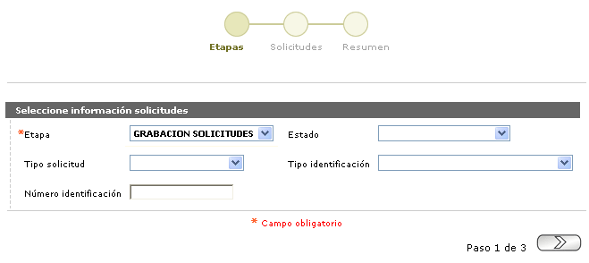

Solicitudes por etapa
Mediante este wizard se posibilita el acceso a las pantallas correspondientes a cada una de las etapas de las solicitudes débito, definidas por la entidad, para la interacción con cada una de ellas.
El wizard se compone de tres pasos: Etapas, Solicitudes y Resumen.
Etapas

|
Etapa |
Campo que posee lista de valores poblada en la opción definición de Etapas de los Parámetros de solicitudes. |
|
Estado |
Combo opcional desde el cual se podrá seleccionar en qué tipo de Estado se desea filtrar la búsqueda. Las opciones son Aprobada totalmente, Aprobada Parcialmente. |
|
Tipo solicitud |
Combo opcional que incluye todos los tipos de solicitudes: Débito nuevo, Renovación, Reposición, Reexpedición. |
|
Tipo identificación |
Combo opcional con los tipos de identificación parametrizados en el sistema en la opción Tipos documento identificación. |
|
Número identificación |
Este campo opcional acepta cualquier dato alfanumérico de máximo deciseis caracteres. |
Al invocar el botón en la parte inferior derecha, el sistema realiza la búsqueda de acuerdo a los campos iingresados en el filtro. De esta forma se desplegará el segundo paso del wizard, que variará dependiendo de qué tipo de etapa fue seleccionada: